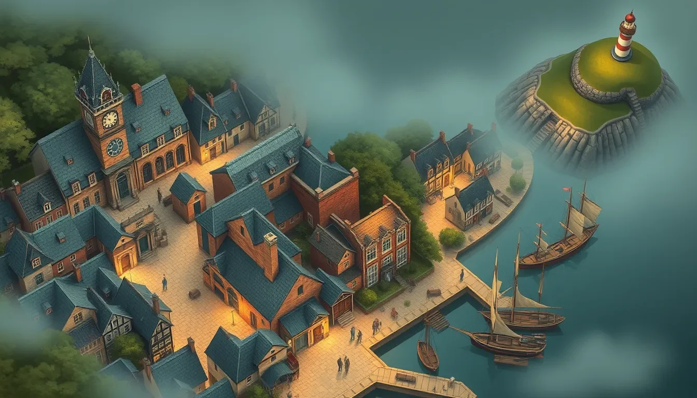

Şüphelinin söylediklerine dikkat et.
Diyalogların içindeki kelimeleri ve anlamı yakala. Anlamadığın yerde öğrenme yardımından yararlan.
Bir polisiye dizinin içindesin.
Bu kez başrolde sen varsın.
Şüphelileri dinle. İpuçlarını birleştir. Saltmere’in sırrını çözerken İngilizceyi hikâyenin içinde öğren.
İlk ipucunu inceleA1’den C2’ye · Kendi hızında

Sis dağılır.
Şüphe kalır.
Tanığın her sabah ne yaptığını anlaman gerekiyor. Cümledeki boşluğu tamamla; doğru kelimenin neden önemli olduğuna birlikte bakalım.
Bu, tanıtım için hazırlanmış örnek alıştırmadır; seviye testi değildir.
She … here every morning.
Bir kelime seç. Yanlış cevapta da açıklamayla devam edebilirsin.
İngilizce, hikâyenin dışında bir ödev değil.
Hikâyeyi anlamanın anahtarı.
Diyalogların içindeki kelimeleri ve anlamı yakala. Anlamadığın yerde öğrenme yardımından yararlan.
Olay yerinde ayrıntı ara. Öğrendiğin kelimeleri Defter’inde yeniden bul, eski vakalara geri dön.
Seçimlerin konuşmaların tonunu ve ilişkileri etkiler. Kendi hızında düşün; seçimlerde geri sayım yok.
A1’den C2’ye uzanan öğrenme yolculuğu.
Her sezonda yeni bir vaka dosyası, yeni bir dil odağı.
İsimler, basit cümleler ve ilk ipuçları.
Günlük olayları ve geçmişte olanları anlat.
Bir fikri açıkla, soru sor, nedenini söyle.
İfadeleri karşılaştır, olasılıkları tartış.
Bakış açısını, vurguyu ve dilin nüanslarını keşfet.
Uzun yolculuğun son sezonu. Hikâyenin son sözü.
Ücretsiz erişim: A1, A2, B1 ve B2 sezonları.
Yalnızca Premium: C1 ve C2 sezonları. Premium olmadan bu iki sezon açılmaz. C1’e geçiş ayrıca B2 sınavını geçmeyi gerektirir.
Sezonlar CEFR seviyelerine göre tasarlanır; uygulama resmi dil sertifikası veya belirli bir sürede seviye kazanma garantisi vermez.
Saltmere’e yeni gelen bir dedektif. Keskin gözler, sakin bir ses ve her ayrıntıya ikinci kez bakma alışkanlığı.
“Let’s look again.”
Onun yanında olay yerini inceleyecek, şüphelileri dinleyecek ve kendi kararlarını vereceksin.
İlk cümleni tamamlaEvet. A1 sezonu ilk kelimeler ve basit ifadelerle başlar. İstersen başlangıçta kısa seviye denemesini atlayıp sıfırdan başlayabilirsin.
Baştan başlayıp alt sezonları Hızlı Mod’da oynayabilir veya erişebildiğin seviyedeki sezona geçip önceki sezonların özetini izleyebilirsin. C1’e geçiş için Premium’a sahip olman ve B2 sınavını geçmen gerekir. Tamamladığın sezonlara Arşiv’den dönebilirsin.
Hedef, seni oyundan çıkarmak değil, öğrenmene yardım etmek. Açıklamalar ve ipuçlarıyla tekrar denersin. Üç hata sonrasında zorunlu bölüm sıfırlama yok.
Ücretsiz planda reklam izleyerek günde en fazla 10 yeni vaka veya bölüm açabilirsin. Premium’da günlük vaka sınırı yoktur; reklam izlemeden istediğin kadar vaka oynayabilirsin. Sezon geçiş sınavlarını yine geçmen gerekir. Bitirdiğin vakaları tekrar oynayabilir, Defter’indeki kelimelere istediğin zaman dönebilirsin.
Evet. A1–B2 sezonları ücretsiz planda erişilebilir. C1 ve C2 yalnızca Premium ile açılır; reklam izlemek bu iki sezonun kilidini açmaz. C1’e geçmek için B2 sınavını da geçmen gerekir. Premium satın almak sınavın yerine geçmez.
Premium tek seferlik satın almadır; abonelik yoktur. Normal fiyatı 349,99 TL’dir. Uygulamanın çıkışından itibaren ilk iki hafta %30 indirimle 244,99 TL olacak. İlk dört sezon dahil her yerde reklamsız kullanım, günlük vaka sınırı olmadan oynama ve C1–C2 sezonlarına erişim sunar. Sezon geçiş sınavları geçerliliğini korur.
Saltmere henüz mağazalarda yayınlanmadı. Bu nedenle burada aktif indirme bağlantısı yok. Mağaza bilgileri hazır olduğunda bu sayfaya eklenecek.
Bir sonraki bölümde ne olacağını merak ederken,
İngilizceyle biraz daha tanış.
Saltmere: İngilizce Polisiye · Yakında